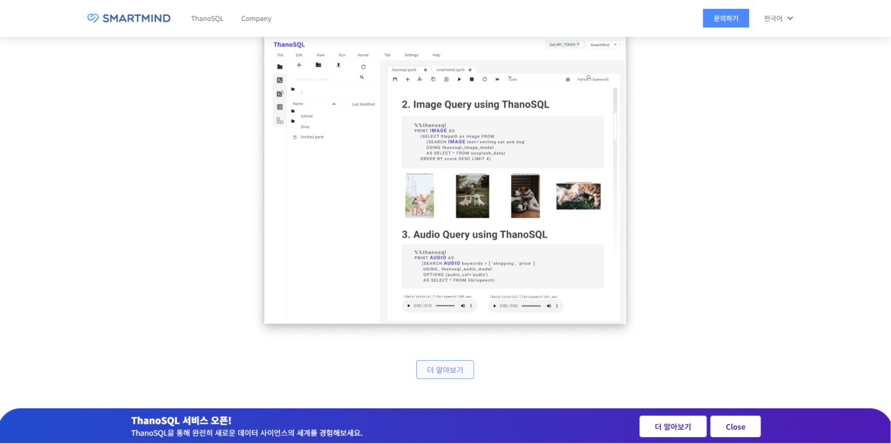
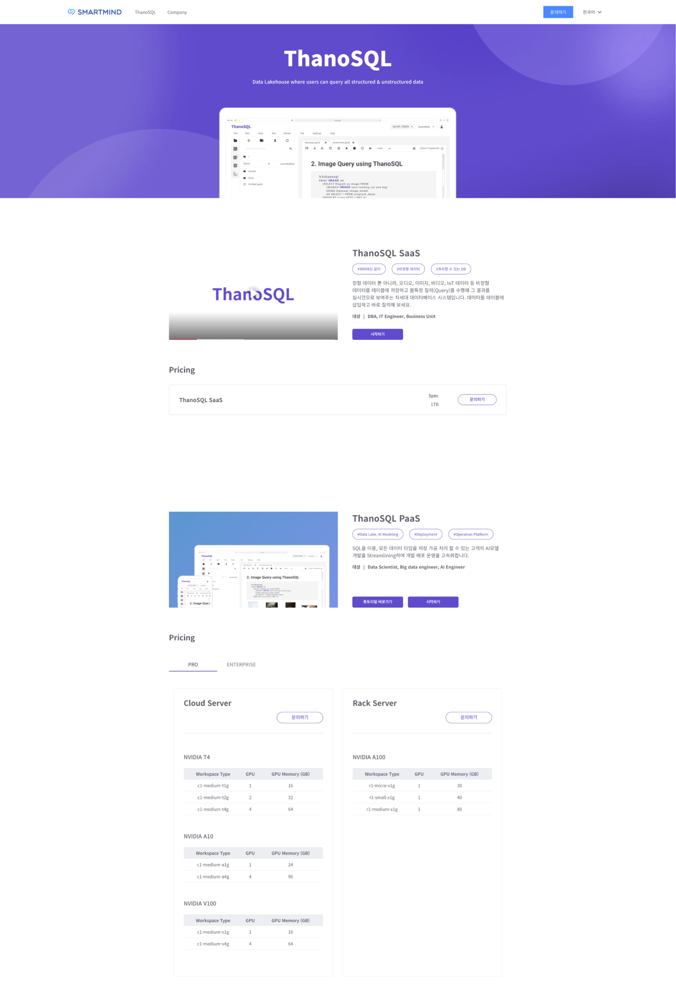
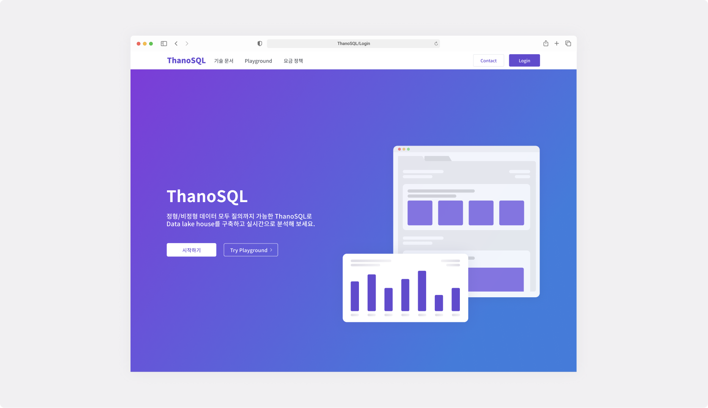

Web(DashBoard&Mobile)
PaaS / B2B
2021.12 ~ 2022.08(업데이트 중)
StoryBoard 작성
디자인 시스템 정의
UX설계
UI 디자인
Figma
Teams
Slack
Click up
ThanoSQL Service 제공 및 안내를 하는 thanosql.ai 입니다. 그러나, 주 사용자(투자자 등..)가 ThanoSQL의 정보를 얻지 못한채 홈페이지를 이탈하여 사용자가 ThanoSQL에 대한 정보를 얻지 못하고, 이탈률까지 높아졌기 때문에 이 문제를 해결하고자 했습니다.
기존 smartmind.team 홈페이지에 ThanoSQL의 콘텐츠를 좀 더 자세히 설명해 놓으면 이탈률도 줄고, thanosql.ai로의 이입률이 높아질 것이라고 가설을 세웠습니다.
전 디자인은 ThanoSQL 서비스를 상단에만 배치시켜 상품에 대해 보게했지만, 이번에는 바텀시트를 배치함으로써, 좀 더 강조효과를 주어 ThanoSQL이라는 서비스가 어떤것인지 좀 더 쉽게 접근할 수 있도록 했습니다.
사용자들이 결국 궁금한 것은 서비스가 어떤 베네핏을 가져다 줄 수 있고, 프로덕트의 스펙에 대한 것이었습니다. 전의 디자인은 너무 장점으로만 혼재되어있었기 때문에, 그래서 서비스에 대한 설명을 간략하게 줄이고, 상품의 스펙을 상세하게 적었습니다. 그리고 가격은 B2B서비스이기 때문에 문의하기로 이동시켜 비즈니스적 커뮤니케이션이 잘 될 수 있도록 배치했습니다.
ThanoSQL 서비스에 빠르게 접근할 수 있도록 사용자들을 위해 통배너를 설계하고 CTA(Call to Action)를 추가했습니다. 이는 강조되어야 하는 부분이므로 배경에 그라데이션을 적용하여 강조효과를 주었습니다.
smrtmins.team에 바텀 시트를 배치하고, ThanoSQL에 대한 자세한 설명과 스펙을 디자인 해놓은 결과, 투자자들의 호기심을 불러일으켰는지, smartmind.team에서의 이탈률이 94.36%에서 43.2%로 감소했고, thanosql.ai의 이입률은 10.25%에서 15.6%으로 이입률이 증가했습니다.
해당 프로젝트를 진행하며 느낀점은 사용자가 결국 어떤 목표를 가지고 서비스에 진입하는지, 내부에서 생각하는 시나리오대로만을 가지고 디자인을 하면 안된다는 것을 다시 한 번 깨닫게 해주었습니다.